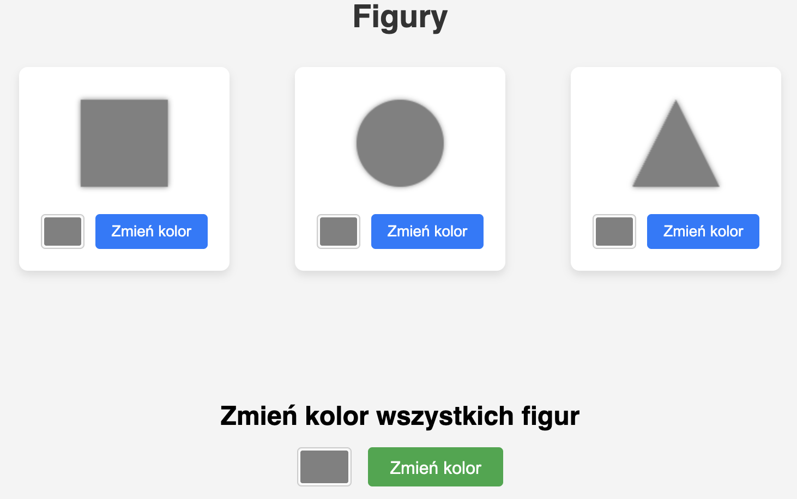

L#08: OOP.
Programowanie obiektowe (ang. Object-Oriented Programming) to paradygmat programowania, który opiera się na koncepcji obiektów. Obiekty są instancjami klas, które definiują ich właściwości i zachowanie. Programowanie obiektowe umożliwia tworzenie bardziej złożonych i elastycznych aplikacji poprzez organizację kodu w moduły.
Programowanie obiektowe opiera się na kilku kluczowych koncepcjach:
Głównym celem tego laboratorium jest zrozumienie i praktyczne zastosowanie mechanizmów programowania obiektowego. Nauczysz się tworzyć bezpieczne metody dostępowe (gettery i settery), stosować mechanizm kopii defensywnej w celu ochrony integralności obiektów, a także przeprowadzisz refaktoryzację aplikacji webowej we Flasku do struktury zorientowanej obiektowo.
setter() jest odpowiedzialny za zmianę "wnętrza" obiektu. Jeśli zaimplementujesz go niedbale, może narobić bałaganu. Weryfikuj, czy podajesz sensowne dane, pilnuj, aby wszystko w obiekcie do siebie pasowało po zmianie. Możesz łatwo "zepsuć" swój obiekt i wprowadzić go w zły stan.
Prosty przykład: Wyobraź sobie setter set_age(). Jeśli pozwala ci wpisać -5 lat, to coś jest nie tak z Twoim obiektem user. Masz okazję poprawić implementację poniższej klasy.
class User:
def __init__(self, name, age):
self._name = name
self._age = age
self._is_adult = self._age >= 18
def get_name(self):
return self._name
def get_age(self):
return self._age
def set_age(self, new_age):
# Problem!
self._age = new_age
user = User("Jan", 30)
print(f"Poczatkowy wiek: {user.get_age()}")
user.set_age(-5)
print(f"Wiek po ustawieniu nieprawidlowej wartosci: {user.get_age()}")
user.set_age(200)
print(f"Wiek po ustawieniu absurdalnie duzej wartosci: {user.get_age()}")
Porady dotyczące tworzenia metod ustawiających.
is_adult),
setter wieku powinien również zaktualizować ten stan.
getter() jest odpowiedzialny za bezpieczny odczyt danych z "wnętrza" obiektu. Jeśli zaimplementujesz go niedbale, możesz ujawnić zbyt wiele. Getter powinien być prosty, ale przemyślany – upewnij się, że zwraca dane w odpowiedniej formie i nie zdradza więcej, niż powinien.
Klasa Transfer posiada niebezpieczny getter(). Zobacz, jak łatwo można naruszyć integralność kluczowej operacji finansowej z zewnątrz. Obiekt, reprezentujący gotówkę klienta, jest uszkodzony. Napraw go stosując kopię defensywną.
class TimeOfTransfer:
def __init__(self, hour, minute):
self.hour = hour
self.minute = minute
def __str__(self):
return f"{self.hour:02d}:{self.minute:02d}"
class Transfer:
def __init__(self, amount, transfer_time):
self._amount = amount
self._transfer_time = transfer_time
def get_transfer_time(self):
# Problem!
return self._transfer_time
def get_amount(self):
return self._amount
def execute_transfer(self):
print(f"Wykonuje przelew na kwote {self._amount} o godzinie {self._transfer_time}")
scheduled_time = TimeOfTransfer(14, 30)
my_transfer = Transfer(100.00, scheduled_time)
print(f"Poczatkowy czas przelewu: {my_transfer.get_transfer_time()}")
my_transfer.execute_transfer()
# Ups! Ktoś dobrał się do czasu przelewu...
time_from_getter = my_transfer.get_transfer_time()
time_from_getter.hour = 16
time_from_getter.minute = 0
print(f"\nCzas przelewu PO ZEWNETRZNEJ INGERENCJI: {my_transfer.get_transfer_time()}")
my_transfer.execute_transfer()
print("\nUps! Kluczowy czas obiektu przelewu zostal zmanipulowany z zewnatrz. ")
print("Ot tak, integralnosc obiektu została naruszona, a to byly czyjes ciezko zarobione pieniadze. ")
print("To tylko zwykly getter(), a jak wiele moze zepsuc")
Pobierz aplikację: flask-figure-app, skopiuj ją do katalogu źródłowego src i uruchom moduł app.py.

Aplikacja jest prostą aplikacją webową, która pozwala na zmianę kolorów figur geometrycznych. Używa Flask do obsługi żądań HTTP i renderowania szablonu HTML.
Wykonaj refaktoryzację kodu i spełnij wymagania:
Odpowiednio zaimplementowane mechanizmy enkapsulacji są niezbędne do zachowania kontroli nad stanem obiektu. Używanie getterów i setterów w sposób świadomy (z weryfikacją poprawności oraz kopiami defensywnymi) zapobiega wstrzykiwaniu nieprawidłowych danych. Refaktoryzacja na paradygmat obiektowy ułatwia zarządzanie i skalowanie aplikacji, co jest szczególnie istotne w projektach webowych.
Strona główna